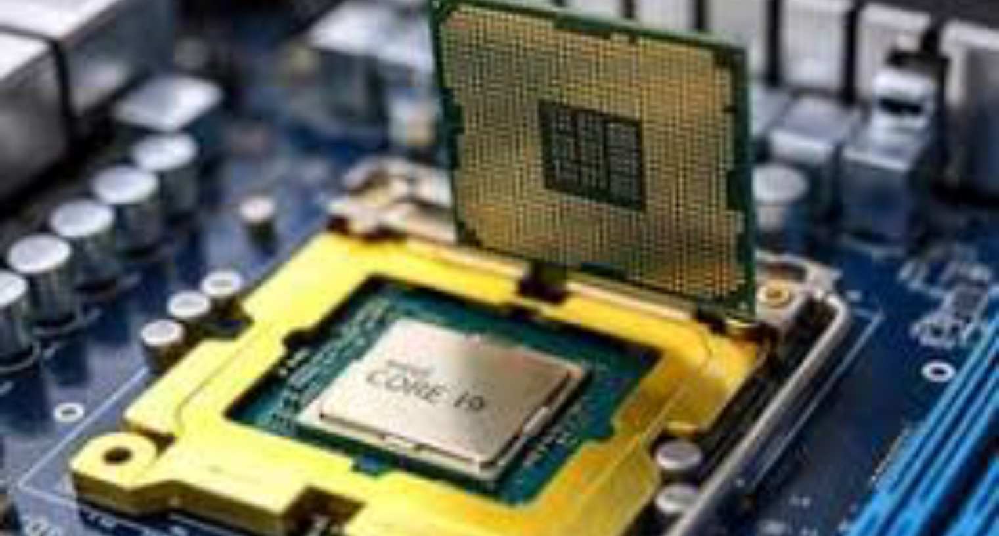
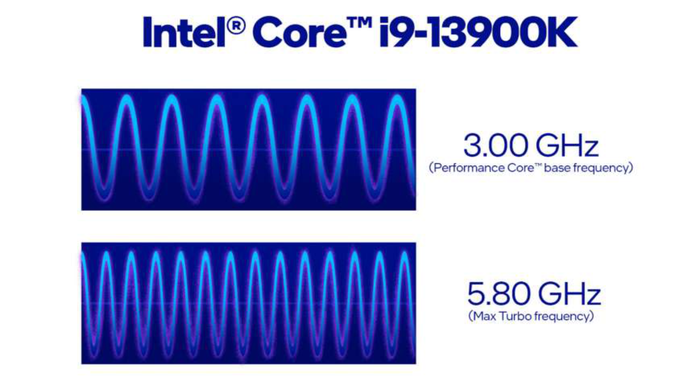
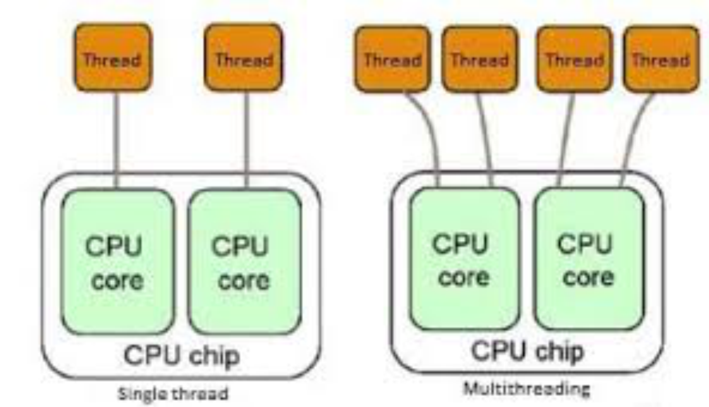
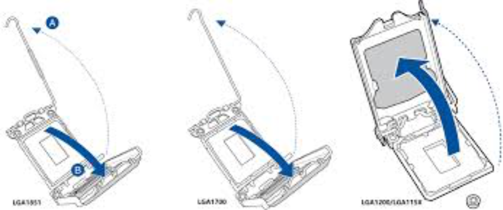
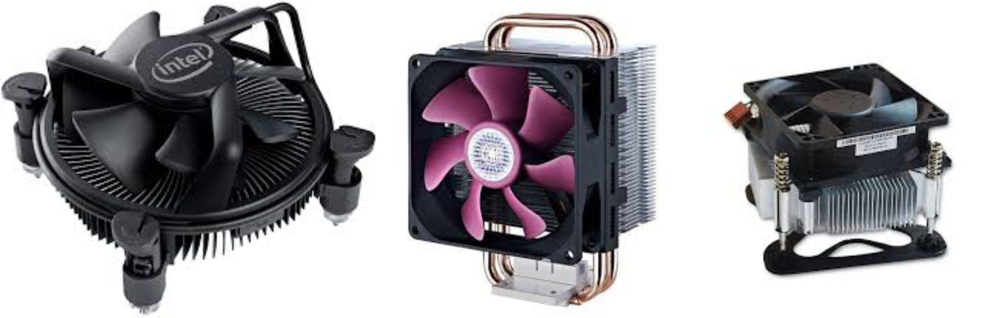
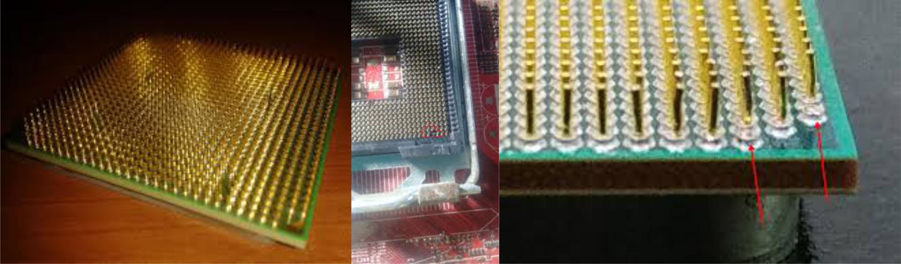
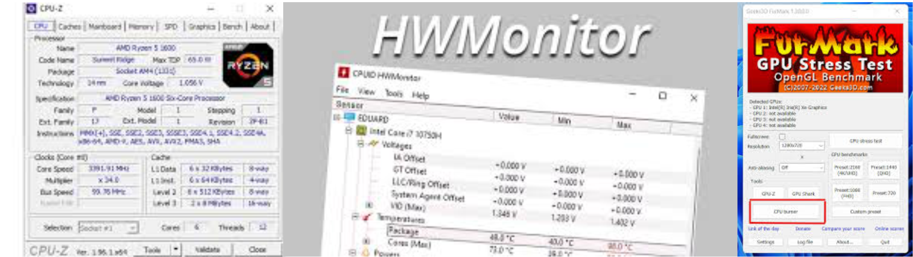

O que é o Processador?
O processador (CPU) é o cérebro do computador. Ele executa cálculos e instruções que fazem o sistema funcionar.
Sua função é receber, processar e enviar informações, coordenando o funcionamento de todos os outros componentes.

Clock e Frequência
O clock define quantos ciclos o processador realiza por segundo, medido em Hertz (Hz).
Exemplo: um processador de 3.0 GHz executa 3 bilhões de operações por segundo.
A frequência e o número de núcleos determinam o desempenho total do sistema.

Núcleos e Threads
Processadores modernos possuem múltiplos núcleos (cores), que permitem realizar várias tarefas simultaneamente.
Cada núcleo pode executar uma thread, e tecnologias como Hyper-Threading (Intel) e SMT (AMD) aumentam essa capacidade, duplicando o número de tarefas processadas.

Socket e Instalação
O socket é o encaixe onde o processador é instalado na placa-mãe.
Cada modelo de CPU possui um tipo de socket específico (ex: LGA1200, AM4).
É importante alinhar o triângulo da CPU com a marca no socket e evitar pressionar os pinos.

Dissipação de Calor e Cooler
O processador gera calor ao trabalhar, e por isso precisa de um dissipador e um cooler para manter a temperatura ideal.
A pasta térmica deve ser aplicada entre o processador e o dissipador para melhorar a condução do calor.

Cuidados com a CPU
- Evite tocar nos pinos dourados ou contatos metálicos.
- Não instale o processador com o PC energizado.
- Use pulseira antiestática ou descarregue a estática antes de manusear.
- Não use excesso de pasta térmica — pode causar curto.

Teste e Diagnóstico
Para verificar o funcionamento da CPU, é possível usar softwares como:
- CPU-Z: mostra frequência, cache e arquitetura.
- HWMonitor: monitora temperatura e voltagem.
- Stress Test: testa estabilidade do sistema.
⚙️ Se o computador não dá vídeo, verifique a presença das tensões Vcore e o encaixe da CPU no socket.
Conclusão
O processador é o coração do computador.
Compreender seu funcionamento, instalação e manutenção é fundamental para diagnosticar e corrigir falhas de desempenho ou inicialização.
Na próxima aula, estudaremos as memórias RAM e ROM em detalhes.